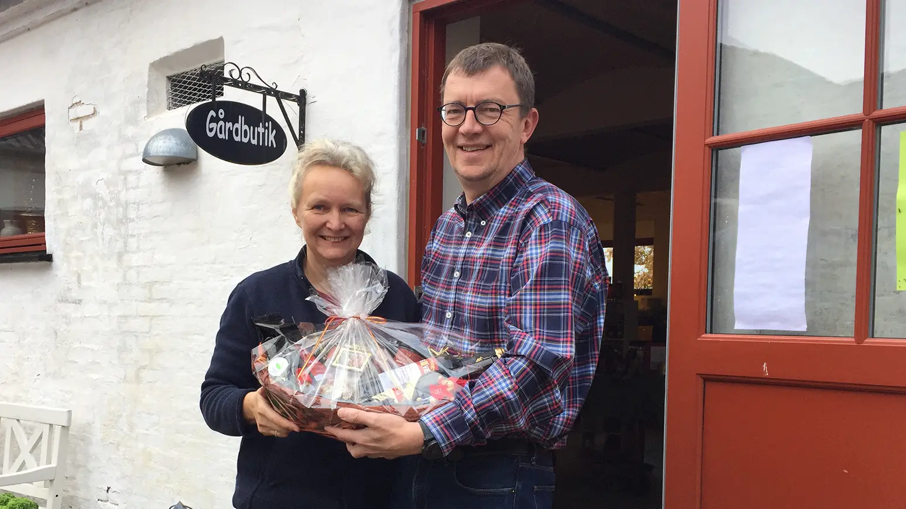

Om os
Historien om adamsgaarden
Adamsgården, er en familieejet gård Hvor vi både har høns, får, katte og Hunde. Vi sælger dagligt ud af vores Mange æg. Derudover har vi vores Gårdbutik som er fyldt med en mas- Se lækre vare vi selv har håndplukket Fra de bedste producenter og beken- Skaber rundt i lokalområdet og hele Verden.
Her kan du se en lille video hvor Charlotte der ejer gården, fortæller noget mere om adamsgaarden